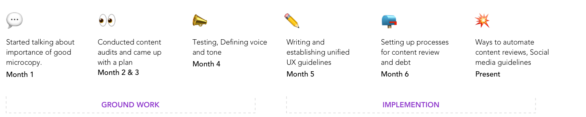
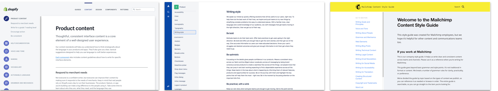
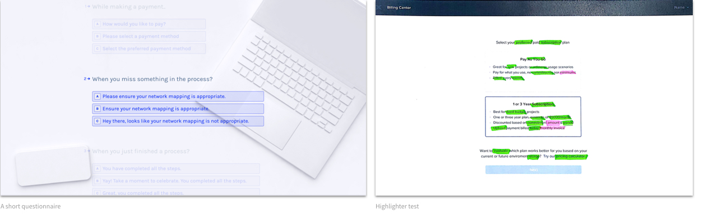

CASE STUDY
Building UX Writing Guidelines @Nutanix
..and everyday challenges as a content strategy team of 1.5
CONTEXT
Top 3 things to know about this project
Nutanix, a leading Hyperconverged Infrastructure company which builds software and hardware for enterprise IT admins, to help them manage and store data in their data centers or on the cloud.
I co-own the efforts to unify the UX writing guidelines and write microcopy for ongoing projects.
Changing any process takes patience, and relentless optimism.
I co-own the efforts to unify the UX writing guidelines and write microcopy for ongoing projects.
Changing any process takes patience, and relentless optimism.
My Journey

Context
Inconsistent, jargon-full writing which lacks a common voice across our flagship product, Prism.
“We are an enterprise B2B. We talk about Data Center Management. Servers. Do we really need to focus on how we label our CTA buttons?” we asked.
“We are an enterprise B2B. We talk about Data Center Management. Servers. Do we really need to focus on how we label our CTA buttons?” we asked.
Goal
The goal was to create a single source of truth who write product copy - designers and developers.
My Role
It was a self-initiated effort, I have always been interested in how we can design with words. If I thought it was easy, I had a think coming!
Led the efforts to create a unified UX Writing Guideline
Help bring in a process to review microcopy and deal with past debt
Explore new tools to automate the content review
Led the efforts to create a unified UX Writing Guideline
Help bring in a process to review microcopy and deal with past debt
Explore new tools to automate the content review
Content Audits
First tedious thing I took up as a side-gig was content audits. I started conducting content audits for ongoing features. I talked to designers on my team, and observed the hand-off process followed.
Identifying the gaps
Since I was also working on various design projects, I could figure out some of the gaps in the hand-off process.
The tedious, often-frustating process allowed me to establish the WHY.
The content audit showed we had a lot of inconsistent naming of entities, time formats, etc. A lot of messages were too wordy and used technical jargon. I decided three main focus areas for myself.
Gathering data points
The strong WHY I had established, helped me get a buy in from my managers and team members. Next step was to go to our graveyard of ideas and see all that has been done.
I gathered various data points for our voice by conducting brainstorming sessions, and testing with our users at our customer meets.
I gathered various data points for our voice by conducting brainstorming sessions, and testing with our users at our customer meets.
Competitive Analysis
I went ahead and looked at the content guidelines for various other companies. The Medium articles, UX writing facebook groups, and list of content strategy resources by Jonathon Colman was everything for me!

Testing the words
We plan to design words. Testing them only makes sense.
I made use of a marketing meet for our product as a way to test out some content with our customers. One was a quick survey about the voice, and second was the highlighter test.

I made use of a marketing meet for our product as a way to test out some content with our customers. One was a quick survey about the voice, and second was the highlighter test.
Results
What did not work?
Users were appreciative of the fact that we are putting our attention to details as small as words they read.
It was a really good way to create quick engagement with our users at the meet.
What did work?
Mostly, we learned what wouldn't work with content testing.
Audience wasn't filtered based on their experience or interest. The quality and quantity of the data that we received are both okay.
Users were appreciative of the fact that we are putting our attention to details as small as words they read.
It was a really good way to create quick engagement with our users at the meet.
What did work?
Mostly, we learned what wouldn't work with content testing.
Audience wasn't filtered based on their experience or interest. The quality and quantity of the data that we received are both okay.
Defining our voice and tone
"What would be Prism, if it were a human?"
Based on all the findings, I decided to define three main personas to define our voice and tone.
Based on all the findings, I decided to define three main personas to define our voice and tone.

Content Guidelines
It was scary, but then after all this, I finally took a stab at writing the content guidelines for Nutanix.
I know there is a lot of things that can be improved significantly, but I am really glad we have started building it. It will be published online by mid-April.
I know there is a lot of things that can be improved significantly, but I am really glad we have started building it. It will be published online by mid-April.
Content Review Process
Together we have come up with a process to put in content review checks at various points of a design process.
Tell us again, what is content strategy?
As part and parcel of my “write-better-words” campaign, I also had to present and talk and educated a lot about UX writing. I carefully tailored every presentation based on who I was presenting to.
Key Takeaways
You get better at asking the “Whys” Why do we need this copy here? Why can we not try this instead?
Build relationships and reach out to people to help them. Once they realize you can help them design better, they tend to make sure to involve you at the right time.


You can learn online, you just have to be curious enough. Almost everything that I have learned is by reading voraciously on the topic, and by following some great content strategists on Twitter.
Other Projects